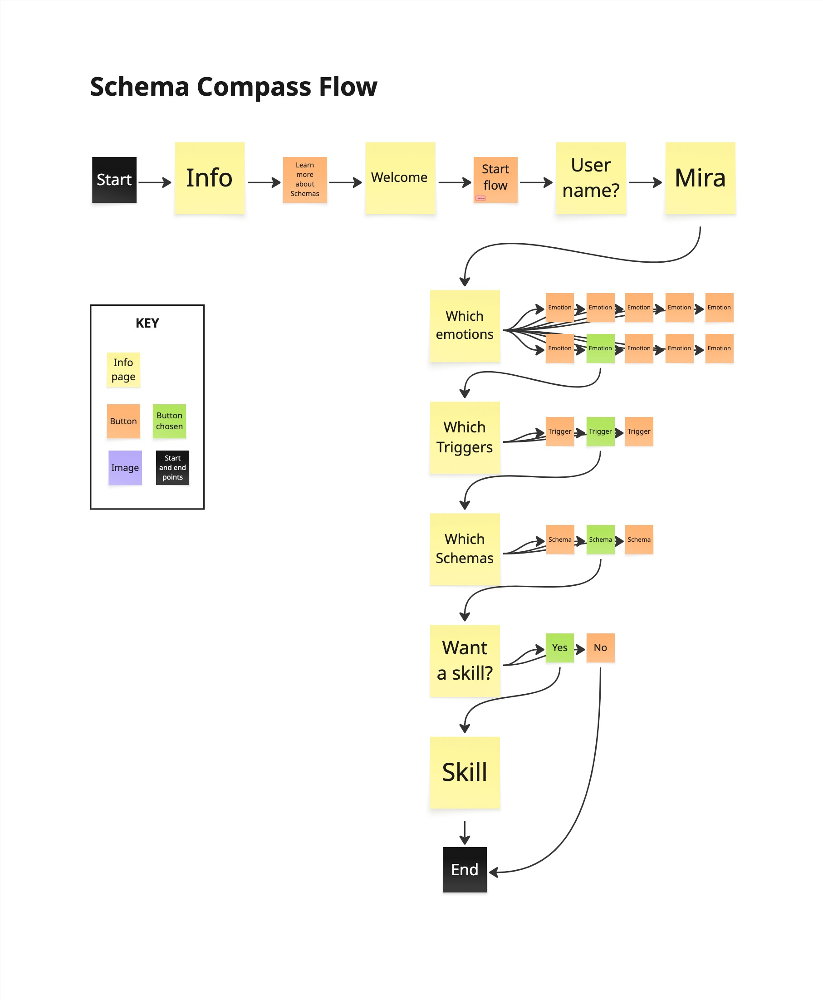
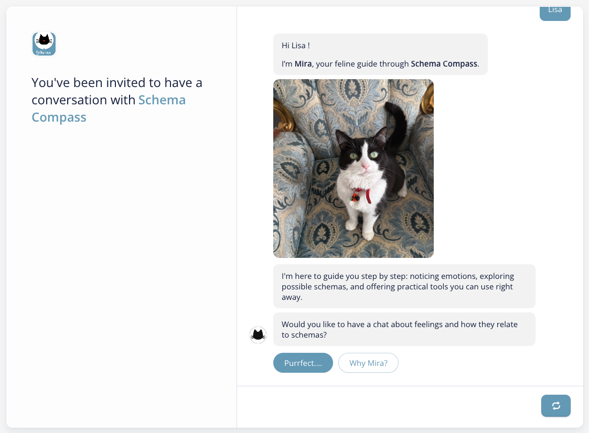
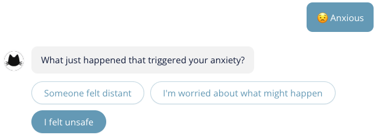
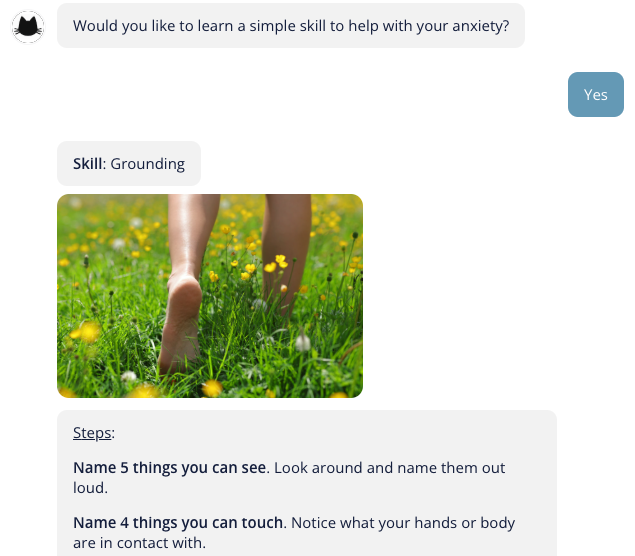
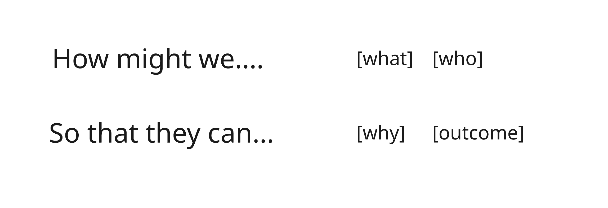

Schema Compass uses guided conversation to help adults apply schema therapy concepts to their own experience. Mira the cat leads learners through emotions, triggers, schemas, unmet needs, and a practical coping skill . one stage at a time.
The Problem
Workbooks, questionnaires, and academic texts are written for clinicians. For most adults wanting to understand their own patterns, the complexity is a barrier before the learning begins.
The design problem was not about simplifying the content. It was about finding a format that could scaffold complex, emotionally engaged learning without a therapist in the room.
Design Rationale
Schema therapy is about applying a framework to lived experience . not memorising a taxonomy. That requires reflection, personalisation, and guided questioning. A chatbot can provide all three. A static resource cannot.
Each stage builds on the previous one. Complexity is introduced only after the prior concept is grounded in personal experience.
Each exchange covers one concept. Short steps reduce cognitive load and prevent the overwhelm that makes dense schema resources inaccessible.
Learners apply concepts to their own emotions and experiences . not a hypothetical scenario . which increases relevance and supports transfer.
Rather than defining schemas and asking for recall, the conversation guides learners to identify their own schema through questioning. Insight is arrived at, not delivered.
The Solution
Each stage mirrors the therapeutic process and corresponds to a learning objective. Learners do not read about schemas . they apply the framework to their own experience as the content unfolds.

Conversation flow. Full Voiceflow architecture mapped before content development began. Every path resolves . no dead ends.

Welcome. Mira sets tone and purpose before schema content is introduced.

Stage 2: Triggers. Emotion selection routes to contextually matched trigger options.

Stage 5: Skills. Each skill includes a photograph and steps the learner can use immediately.
Key Design Decisions
The five stages follow the same order as the schema therapy framework because the concepts depend on each other. You cannot name a schema without first grounding it in an emotion and a trigger. The sequence is the pedagogy . each stage is a prerequisite for the next.
Free text would require learners to already know the vocabulary of schema therapy. Buttons reframe the task to recognition rather than recall . a lower-demand cognitive task at the right point in the sequence. They also ensure every path reaches a coping skill, the actual learning outcome.
Mira creates tonal distance from clinical authority, making the experience feel exploratory rather than diagnostic. The learning task requires examining uncomfortable patterns . learners are more likely to do that in a context that feels curious rather than evaluative. User testing confirmed the voice landed as intended.
Each conversation path ends with a coping skill matched to the schema and emotion the learner identified . with step-by-step instructions and a photograph. This is the transfer moment. Without it, the session is reflection without application.
Design Process
All 20 schemas mapped from primary sources across 5 domains . each with unmet needs, maladaptive beliefs, schema modes, healthy adult responses, and linked skills. Fourteen coping skills documented with step-by-step instructions. This reference system became the architecture for the branching logic before any Voiceflow build began.
A "How might we" brief framed the problem before solution development. Learning objectives were developed from the brief to define what success looks like for a learner completing the experience.

Full architecture mapped in Voiceflow before any content was written. Every path reviewed for dead ends. The goal: no learner path terminates without reaching a skill.
Every response written in plain language . warm, direct, non-clinical. Skill content written for immediate practical use, with numbered steps rather than abstract guidance.
Structured protocol across three phases: before use, immediately after, and on reflection. Two iterations made in response: voice playback added, name input friction removed.
User Testing
"It was well structured and clear. The cat assistance and lots of question prompts were what I liked most. I would like to see more skills and tools as options."
"I can see potential, despite this being a very limited demo. He tried it again with the volume up and said the voice makes it better."
"Reasonably clear from the start. Entering my name was what frustrated me most."
"I felt very guided. The practical strategies were easy to use. Send it to me when it's fully up and running . I'll use it."
"The voice is perfect . trustworthy, without being elite. For schema education and practising different responses I think this app idea is excellent."
Schema Compass is an educational tool, not a therapeutic one. All content was developed from primary sources (Young et al., 2003; Bricker and Young, 2020) and reviewed by a practising psychologist, who confirmed the educational framing was appropriate and expressed intent to recommend the tool to clients for use alongside therapy.
Outcomes and Reflection
The most useful critique came from Alan: his expectation of broader functionality identifies the real gap between proof-of-concept and a tool that earns sustained engagement. Testing also revealed a limitation in the evaluation design . close-ended questions limited what participants could tell me about what they had actually learnt. Future testing would add open prompts tied directly to the learning objectives.